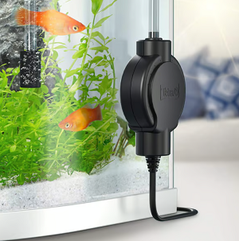

Vzduchovací kompresor
K čemu slouží?
- Okysličování vody
- Zajištění pohybu vody
- Cena: 300 - 1300 Kč
- Je nutný? Většinou ano, ale záleží na druhu ryby
Vzduchování v akváriu plní několik důležitých funkcí, zejména v souvislosti s okysličováním vody a udržením zdravého prostředí pro ryby a další vodní organismy.
Okysličování vody: bublinky ze vzduchování pomáhají narušovat hladinu vody a podporují výměnu plynů mezi vodou a vzduchem. Také Pomáhá rybám dýchat: V akváriu bez dostatečného okysličování mohou mít
ryby problém s dýcháním, což se projevuje jejich lapáním po vzduchu u hladiny
Zajištění pohybu vody: díky pohybu, který vzduchování vytváří, se voda lépe promíchává, což pomáhá rovnoměrně rozptylovat teplo, živiny a kyslík po celém akváriu
Ke vzduchovacímu kompresoru je potřeba dokoupit hadičku, škrtidlo (na kontrolu toku vzduchu) a vzduchovací kámen(koncovka, která se zapojí na druhý konec hadičky a následně se zahrabe do substrátu).